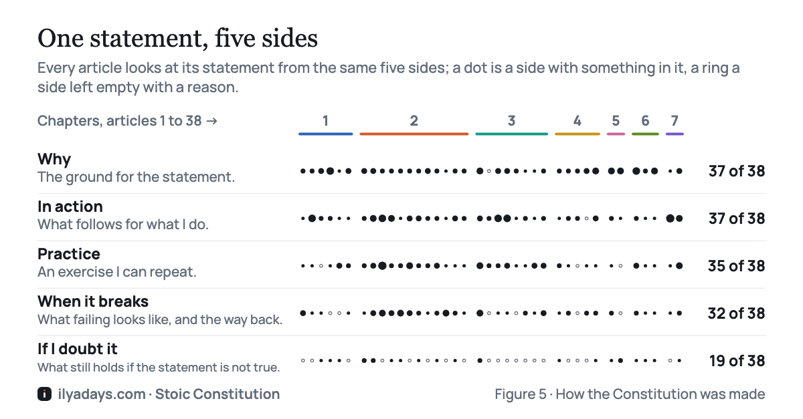
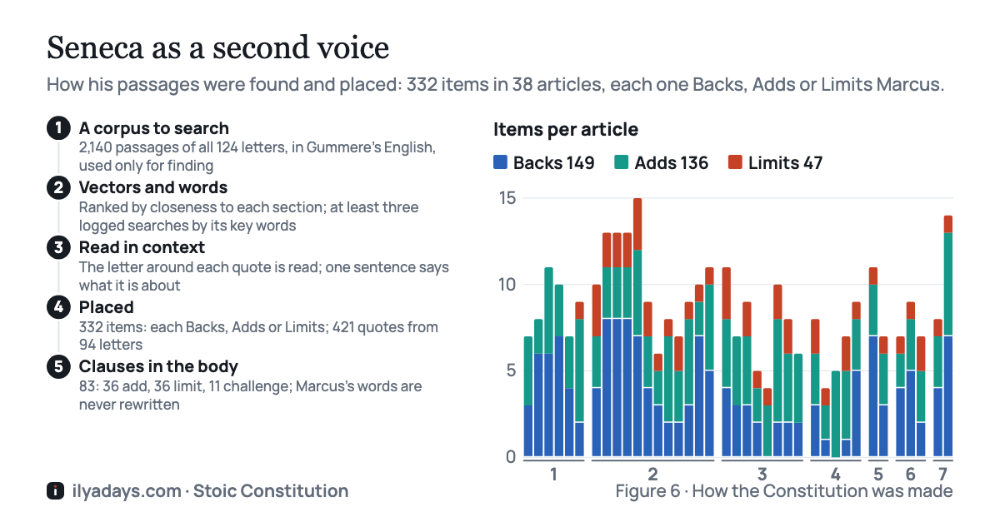
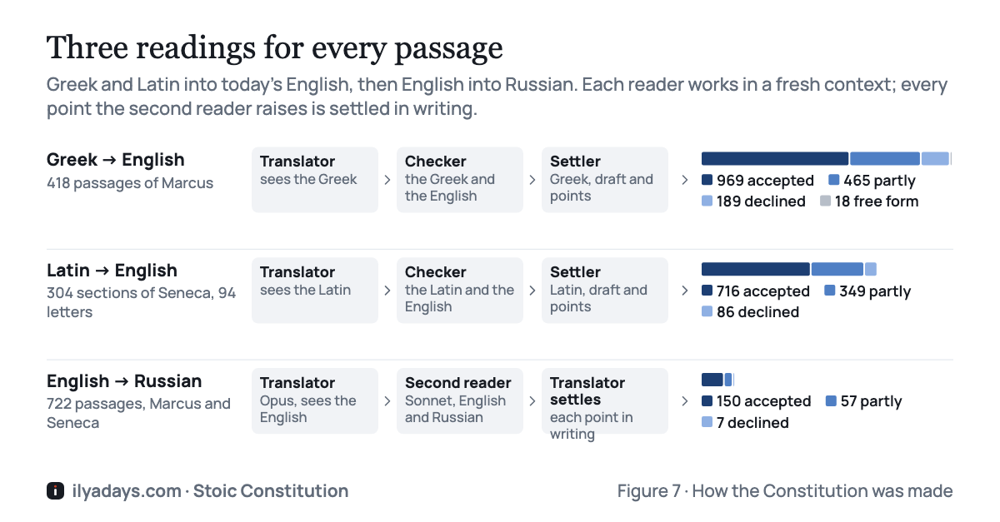
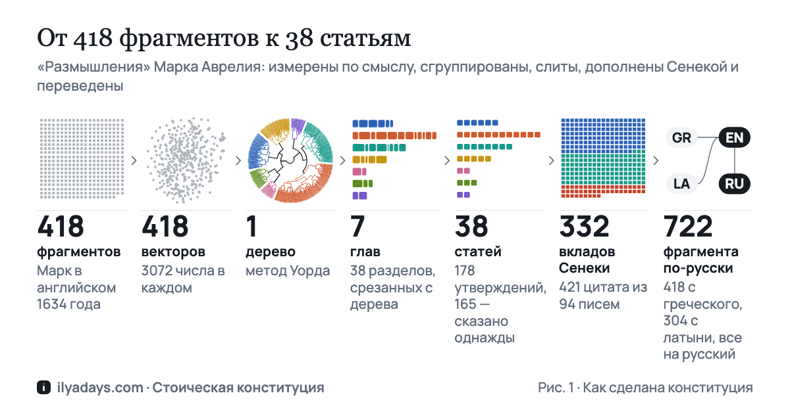
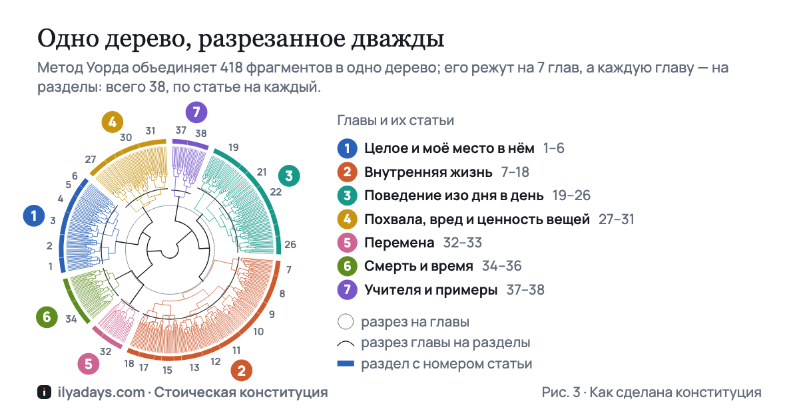
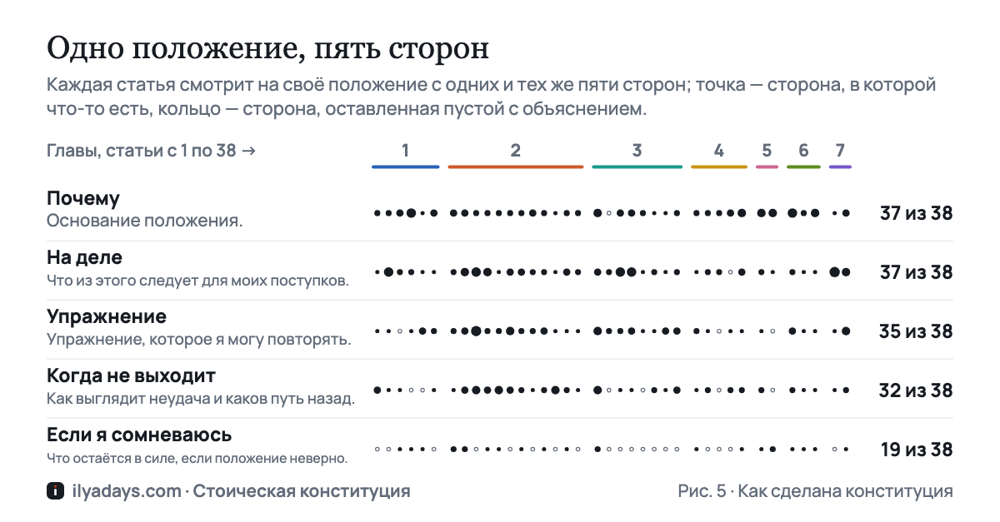
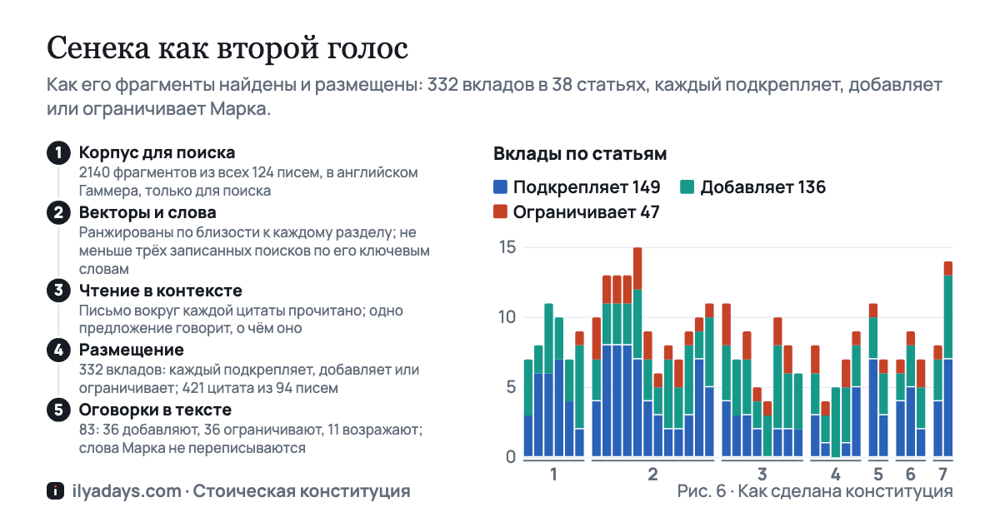
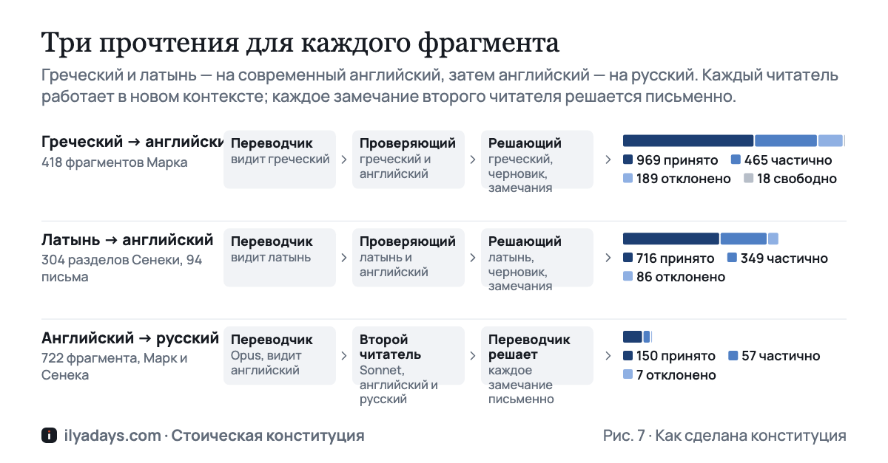

Stoic Constitution · Method
The figures
The eight figures of the method paper, drawn from the published record. Each comes as a 1200 × 1200 and a 1200 × 627 image for sharing, and as SVG.

Figure 1
From 418 passages to 38 articles
Marcus Aurelius’s Meditations, measured by meaning, grouped, fused, joined by Seneca and translated

Figure 2
418 passages, placed by meaning
Each dot is one passage; dots that are near each other have similar vectors. One panel per chapter.

Figure 3
One tree, cut twice
Ward’s method joins the 418 passages into one tree; it is cut into 7 chapters, and each chapter into sections: 38 in all, one article each.

Figure 4
Fusing a section into an article
Article 1, “A member of one body”: each passage keeps its colour, from the claims it feeds to the words it backs.

Figure 5
One statement, five sides
Every article looks at its statement from the same five sides; a dot is a side with something in it, a ring a side left empty with a reason.

Figure 6
Seneca as a second voice
How his passages were found and placed: 332 items in 38 articles, each one Backs, Adds or Limits Marcus.

Figure 7
Three readings for every passage
Greek and Latin into today’s English, then English into Russian. Each reader works in a fresh context; every point the second reader raises is settled in writing.
![Six layers in order: The build: 961 quotes of Marcus, each one exact span of its passage; 1,444 passage revisions hashed; Acceptance gates: 0 blocking findings over all 38 articles; 74 warnings for a person to read; Independent review: 18 of 19 first reviews sent the article back to its writer; Reading across: 79 findings: 68 overlaps, 7 contradictions, 4 labels; Tests: npm test every quote resolves, counts agree, both languages complete; Browser check: 360 · 390 · 1440 px wide, EN and RU, with and without Seneca; no text under 12 px.](share/checks-en-landscape.png)
Figure 8
Six layers of checks
An article reaches the page only through all of them: two scripts, two readers who did not write it, then tests and a browser.


![Six layers in order: The build: 961 quotes of Marcus, each one exact span of its passage; 1,444 passage revisions hashed; Acceptance gates: 0 blocking findings over all 38 articles; 74 warnings for a person to read; Independent review: 18 of 19 first reviews sent the article back to its writer; Reading across: 79 findings: 68 overlaps, 7 contradictions, 4 labels; Tests: npm test every quote resolves, counts agree, both languages complete; Browser check: 360 · 390 · 1440 px wide, EN and RU, with and without Seneca; no text under 12 px.](share/checks-en-square.png)
Стоическая конституция · Метод
Рисунки
Восемь рисунков к описанию метода, построенных по опубликованным данным. Каждый — в виде картинок 1200 × 1200 и 1200 × 627 для публикации и в SVG.

Рис. 1
От 418 фрагментов к 38 статьям
«Размышления» Марка Аврелия: измерены по смыслу, сгруппированы, слиты, дополнены Сенекой и переведены

Рис. 2
418 фрагментов, расставленных по смыслу
Каждая точка — фрагмент; близкие точки — похожие векторы. По панели на главу.

Рис. 3
Одно дерево, разрезанное дважды
Метод Уорда объединяет 418 фрагментов в одно дерево; его режут на 7 глав, а каждую главу — на разделы: всего 38, по статье на каждый.

Рис. 4
Как раздел сливается в статью
Статья 1 «Член единого тела»: у каждого фрагмента свой цвет — от утверждений до слов.

Рис. 5
Одно положение, пять сторон
Каждая статья смотрит на своё положение с одних и тех же пяти сторон; точка — сторона, в которой что-то есть, кольцо — сторона, оставленная пустой с объяснением.

Рис. 6
Сенека как второй голос
Как его фрагменты найдены и размещены: 332 вкладов в 38 статьях, каждый подкрепляет, добавляет или ограничивает Марка.

Рис. 7
Три прочтения для каждого фрагмента
Греческий и латынь — на современный английский, затем английский — на русский. Каждый читатель работает в новом контексте; каждое замечание второго читателя решается письменно.
![Шесть слоёв по порядку: Сборка: 961 цитата Марка, каждая — точный отрезок своего фрагмента; 1444 редакции фрагментов под хешем; Приёмочные проверки: 0 блокирующих замечаний по всем 38 статьям; 74 предупреждения для человека; Независимый рецензент: 18 из 19 первых рецензий вернули статью автору; Чтение всех статей: 79 замечаний: 68 пересечений, 7 противоречий, 4 ярлыка; Тесты: npm test каждая цитата находится, числа сходятся, оба языка полны; Проверка в браузере: 360 · 390 · 1440 px, EN и RU, с Сенекой и без; текст не мельче 12 px.](share/checks-ru-landscape.png)
Рис. 8
Шесть слоёв проверки
Статья попадает на страницу, только пройдя их все: два скрипта, два читателя, которые её не писали, затем тесты и браузер.


![Шесть слоёв по порядку: Сборка: 961 цитата Марка, каждая — точный отрезок своего фрагмента; 1444 редакции фрагментов под хешем; Приёмочные проверки: 0 блокирующих замечаний по всем 38 статьям; 74 предупреждения для человека; Независимый рецензент: 18 из 19 первых рецензий вернули статью автору; Чтение всех статей: 79 замечаний: 68 пересечений, 7 противоречий, 4 ярлыка; Тесты: npm test каждая цитата находится, числа сходятся, оба языка полны; Проверка в браузере: 360 · 390 · 1440 px, EN и RU, с Сенекой и без; текст не мельче 12 px.](share/checks-ru-square.png)